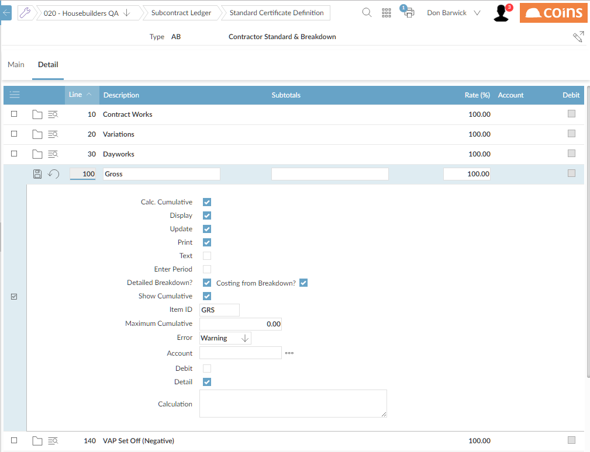

Certificate Breakdown -Certificate Definition
A box field on the certificate definition line indicates whether the line has a breakdown. If ed, the field is disabled for user input, and values must be entered in the breakdown.
The lines with ID specified in the parameters SC/IDORIGand SC/IDVARmust have the breakdown box ed to have the breakdown items automatically generated. Once this box has been ed for any line, the breakdown functionality is enabled for any subcontracts using the definition. This means that certificate entry can no longer be used for these orders.
